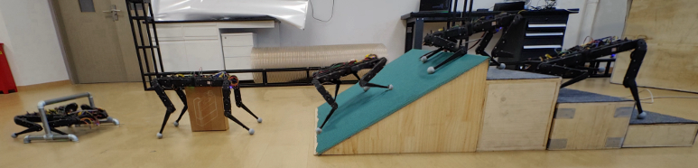
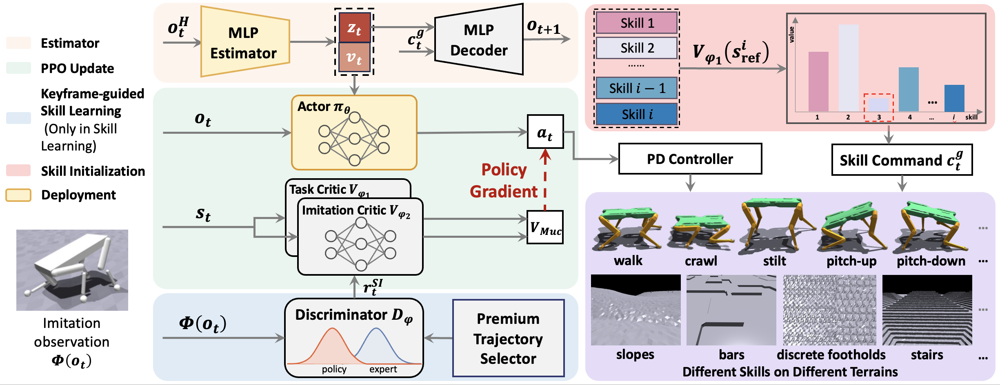

Abstract
With advances in reinforcement learning and imitation learning, quadruped robots can acquire diverse skills within a single policy by imitating multiple skill-specific datasets. However, the lack of datasets on complex terrains limits the ability of such multi-skill policies to generalize effectively in unstructured environments. Inspired by animation, we adopt keyframes as minimal and universal skill representations, relaxing dataset constraints and enabling the integration of terrain adaptability with skill diversity. We propose Keyframe Guided Self-Imitation for Robust and Adaptive Skill Learning (KiRAS), an end-to-end framework for acquiring and transitioning between diverse skill primitives on complex terrains. KiRAS first learns diverse skills on flat terrain through keyframe-guided self-imitation, eliminating the need for expert datasets; then continues training the same policy network on rough terrains to enhance robustness. To eliminate catastrophic forgetting, a proficiency-based Skill Initialization Technique is introduced. Experiments on Solo-8 and Unitree Go1 robots show that KiRAS enables robust skill acquisition and smooth transitions across challenging terrains. This framework demonstrates its potential as a lightweight platform for multi-skill generation and dataset collection. It further enables flexible skill transitions that enhance locomotion on challenging terrains.

Skill Imitation and Transition
Skill Imitation based on Keyframes
Flexible Skill Transition on Solo-8
Solo-8 Locomotion Ability
Crossing Rough Terrain
Using Different Skills to Traverse Different Terrain
Skill Switching Test
Unitree Go1 Biped Skill Test
Our Previous Work: PASIST
Continuous Control of Diverse Skills in Quadruped Robots Without Complete Expert Datasets
- This paper applies Generative Adversarial Self-Imitation Learning (GASIL) to quadruped robot skill learning for the first time, and designs a new metric by integrating task rewards with Dynamic Time Warping (DTW) values to realize autonomous selection and extraction of high-quality trajectories without complete expert datasets.
- It serves as the theoretical foundation of KiRAS.
BibTeX
@inproceedings{tu2025continuous,
title={Continuous Control of Diverse Skills in Quadruped Robots Without Complete Expert Datasets},
author={Tu, Jiaxin and Wei, Xiaoyi and Zhang, Yueqi and Hou, Taixian and Gao, Xiaofei and Dong, Zhiyan and Zhai, Peng and Zhang, Lihua},
booktitle={2025 IEEE International Conference on Robotics and Automation (ICRA)},
pages={11191--11197},
year={2025},
organization={IEEE}
}
@ARTICLE{11155164,
author={Zhang, Yueqi and Qian, Quancheng and Hou, Taixian and Zhai, Peng and Wei, Xiaoyi and Hu, Kangmai and Yi, Jiafu and Zhang, Lihua},
journal={IEEE Robotics and Automation Letters},
title={RENet: Fault-Tolerant Motion Control for Quadruped Robots via Redundant Estimator Networks under Visual Collapse},
year={2025},
volume={},
number={},
pages={1-8},
keywords={Legged Robots;Reinforcement Learning},
doi={10.1109/LRA.2025.3608633}}